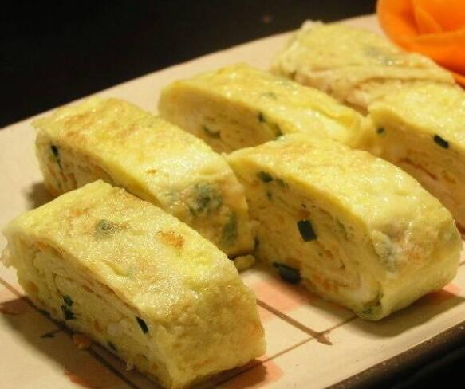

 Chinese egg rolls are closely related to spring rolls however, egg rolls are completely different from the spring roll. Its origin remains unclear and mysterious, people only know that egg rolls are from GuanDong, China. It is a sort of deep-fried food, with the crispy flour skin that’s fried in boiling oil. Inside the fragrant skin wraps a mix of chopped pork, pieces of cabbage and other ingredients. After the hot bath it had within the pot, the roll was served onto the table and later drowned by the sauces. Egg rolls are a standard holiday desert of the Han nationality, popular in all parts of China. The rolls not only served their homes but also used for hospitality. It has a long history and evolved from ancient spring cakes. According to the ancient book "Sui Shi Guang Ji" by Chen Yuanliang: “"In the spring day, we eat spring cakes, lettuce, and the spring plate." The Qing Dynasty "Yen Jing Sui Shi Ji" also stated: "In spring, rich people eat spring cakes. "”
( BaiDuBaiKe N.D.). It are often seen that the folks custom of creating spring cakes in spring and eating spring cakes features a long history. There are many proverbs about spring rolls, such as "A roll does not make spring", "Longshengtang's spring rolls-inside and outside are not people" and so on. Spring means the season spring, and there is an honest sign of welcoming the spring in china.
The egg roll is made using flour and eggs, which provides it a harder and sturdier texture and there will be bubbles appearing on the skin when it’s fried. It’s crispy on the surface and thick and doughy on the within. on the other hand, the Spring rolls have a skinny flour wrapper with no eggs used in the making. It is very light and flaky, when fried it becomes delicately crispy and crunchy all the way through. Spring rolls have a more extended history compared to egg rolls in china and are more popular than the egg rolls. However egg rolls and spring rolls both are significant to Chinese culture and will never be forgotten.
Approximate time taken: 40min- 110min. Nowadays, egg rolls spread to other parts of the globe. “There are numerous other versions of egg rolls in other countries like vietnam, india, USA , UK and even australia.” (TasteAtlas 2016). However, the egg rolls are always native to china and are a apart of chinese culture。
TasteAtlas. “Egg Roll: Traditional Appetizer From Guangdong: TasteAtlas.” World Food Atlas: Discover 11,062 Local Dishes & Ingredients, TasteAtlas, 18 Oct. 20162016, www.tasteatlas.com/egg-roll.
“春饼.” Baidubaike, baike.baidu.com/item/春饼/1625296?fr=aladdin

go home